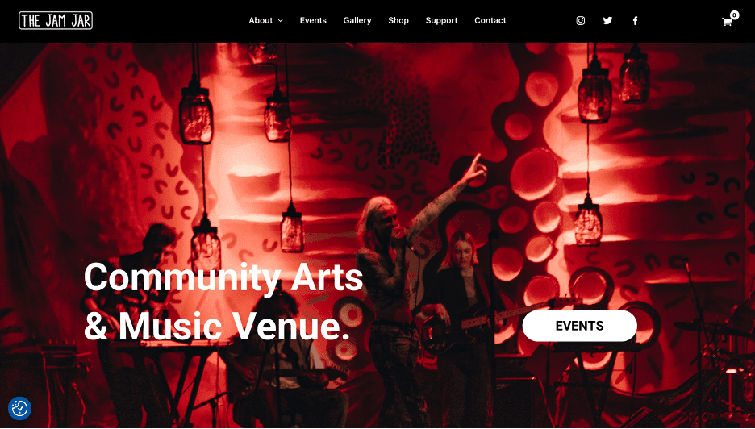
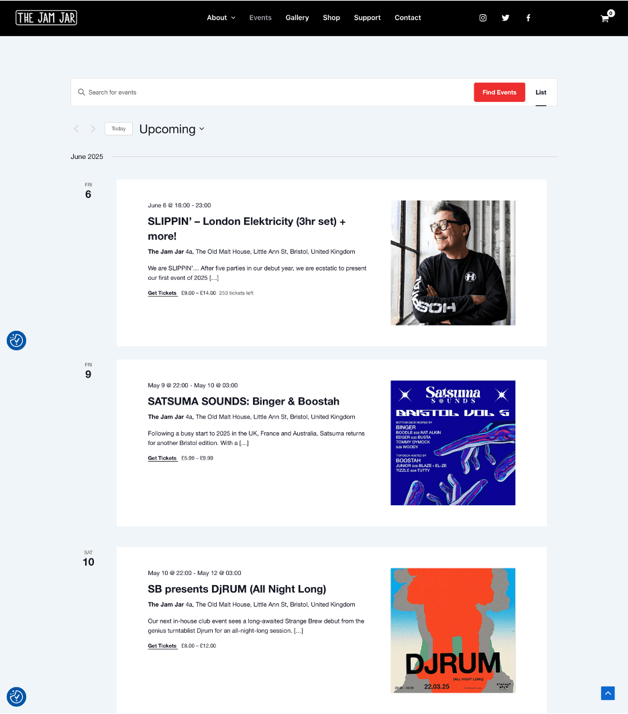
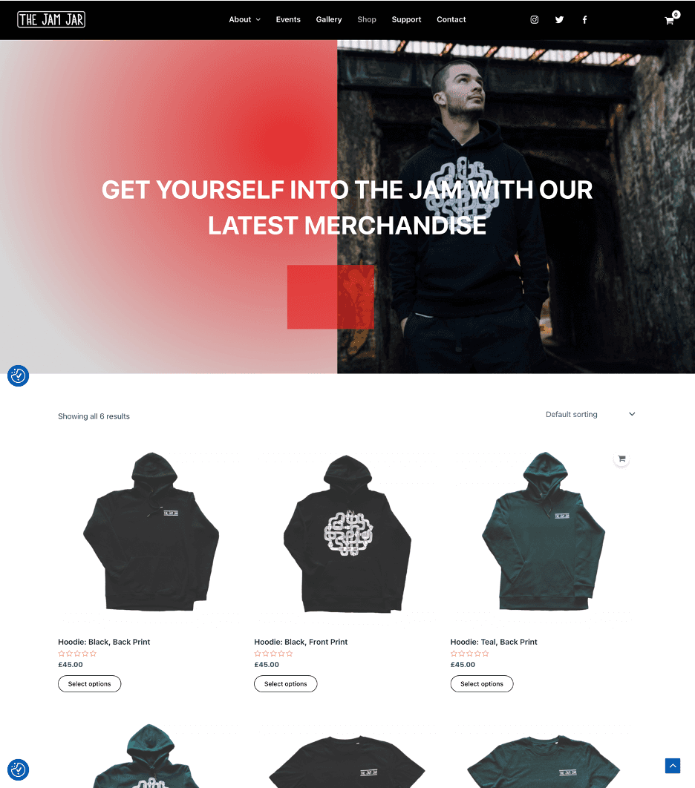
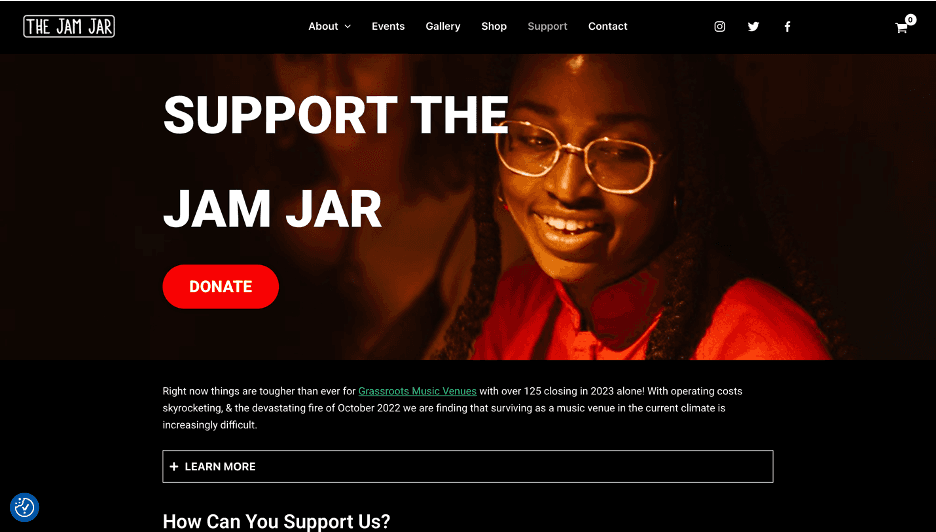

The Jam Jar
Redesigning a local Bristol music venue's website, balancing raw energy with real accessibility.

The problem
The venue needed a website serving several functions at once: event discovery and booking, merchandise sales, community support, and full accessibility compliance. The real challenge was to design something that felt genuinely local and authentic while meeting real accessibility requirements across both desktop and mobile.
The approach
- Competitor research analysing similar local venues
- Figma wireframes: desktop-first, then adapted for mobile
- Gestalt principles applied throughout the layout
- An accessible black-and-white primary palette ensuring strong contrast
The build
I built six fully functional pages (home, events, shop, support, about and accessibility) on WordPress. WooCommerce handled e-commerce with custom styling, and The Events Calendar plugin added integrated ticketing. Performance was tuned with image compression and lazy loading.
A grassroots venue should feel like one online, bold and a bit raw, without ever locking out the people it serves.



Outcome
The standout achievement was integrating third-party plugins while maintaining a cohesive brand identity throughout the purchase and event flows. The live site is no longer hosted (the university hosting expired), but the full Figma wireframes remain as a record of the design.